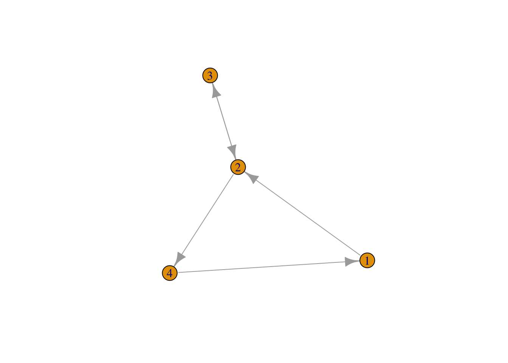
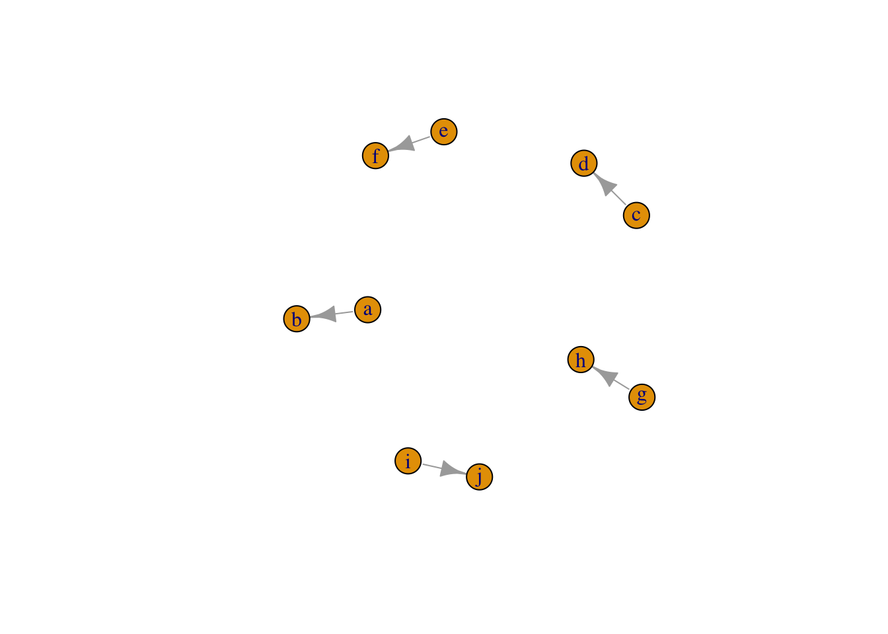
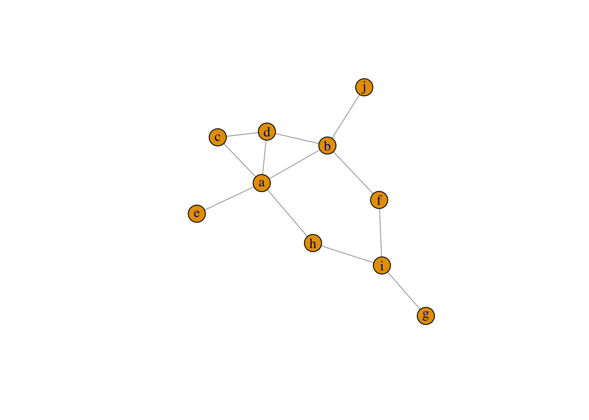
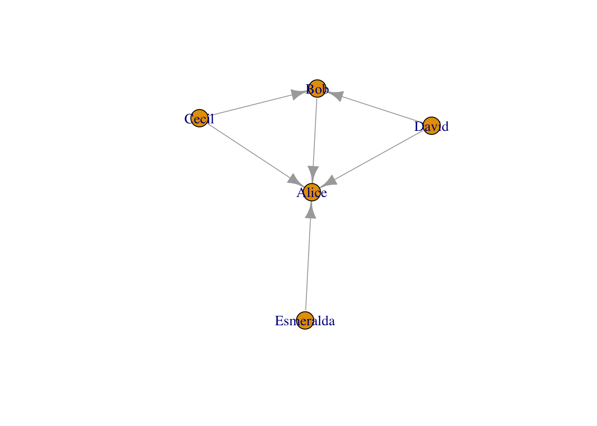
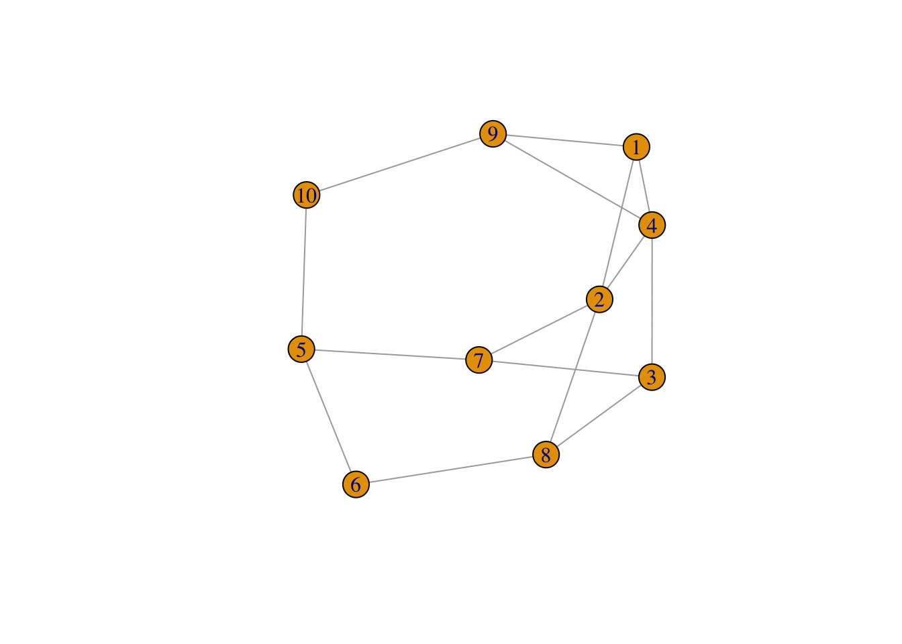
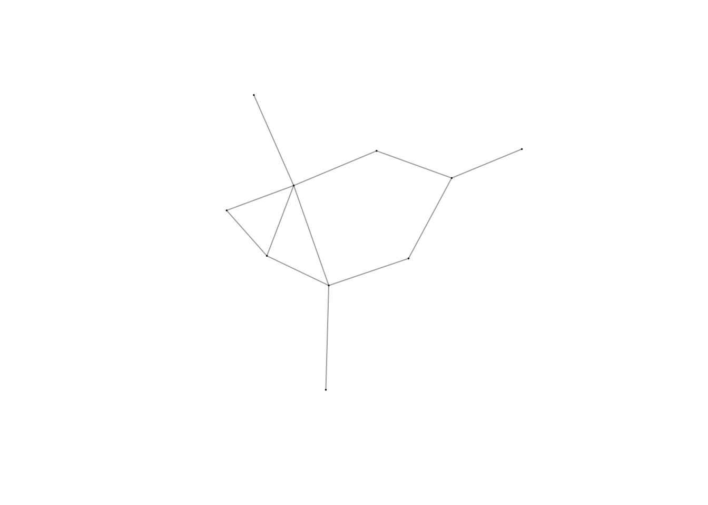
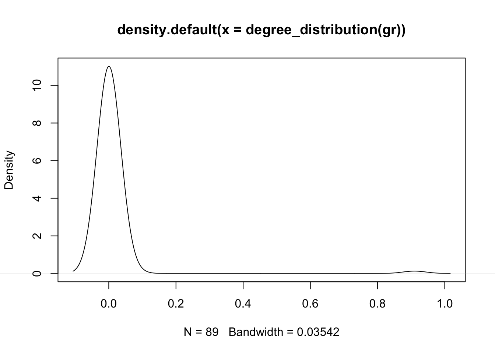
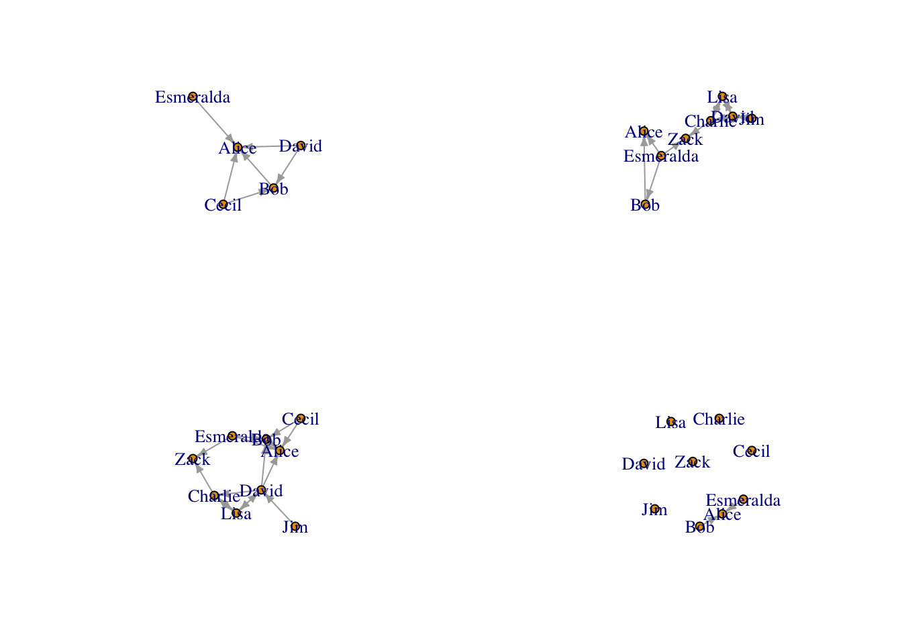

library(igraph)
library(tidyverse)
library(ggraph)
library(gridExtra)Network Analysis in R - Part 1
R
network
Network analysis, also called graph analysis, is to study the complexity of the inter-relationships between actors of all sorts and provides an architectural view of individual actor connections.
It has been applied to many fields, like social network and gene network, and useful for any systematic studies on individual relationship 1.
I will create a three part series 2 of network analysis and visualization using R packages {igraph} and {ggraph}. In this post, I will focus on general introduction of the terminology and R objects used in network analysis.
Glossaries
Vertex: is the node of network.
Edge: the connection of notes, sometimes called “linked”. The edge can be directed or undirected, depending on whether the distinction between source and target is meaningful.
Graph: constitute of vertex and edges, which represents the whole inter-relationship of nodes. The subgraph, from the other hand, represents the inter-relationship of a subset of nodes.
Cliques: Fully connected sub-graphs of a graph in which the every vertex connects with every other vertex.
Degree : the number of adjacent vertex.
Order : how far away from one vertex to another. order 0 is always v itself, order 1 is v plus its immediate neighbors, order 2 is order 1 plus the immediate neighbors of the vertices in order 1, etc.
Attribute: attributes are associated with either vertex or edge. By default, the
nameis the mandatory attribute for vertex and edge. If the edges have a magnitude attribute, the graph is considered weighted.Bipartite networks: two-mode networks, in which there are two types of vertex and connections are only allowed between different types of nodes. Thus,
typeis a mandatory vertex attribute for bipartite networks. There are two types of common used bipartite networks:Two types of vertex are annotated either “individual” or “group” to which the individual belong to. This is also called “affiliation network”.
the network consistent of two “parallel” types of vertex, in which type 1 only interact with type 2 while no interactions happen within the same type.
IGRAPH object
IGRAPH object is a R object defined in igraph package.
make_graph(letters[1:10], directed = T)IGRAPH be34cdf DN-- 10 5 --
+ attr: name (v/c)
+ edges from be34cdf (vertex names):
[1] a->b c->d e->f g->h i->jThe first line of IGRAPH IGRAPH dca479d DN-- 10 5 -- means a graph with id dca479d is directed (D) and named (N) containing 10 vertices and 5 edges.
The second line + attr: name (v/c) indicates the attributes associated with vertex (v) and/or edge (e). In our example, only vertex has attribute name which is a character variable (c).
The third and fourth line of IGRAPH literally print what edges are. In our case, since graph is directed, the arrow shows the direction of edge.
It is worth to mention that the name of edges can be listed by vertices name in a from|to format. In most cases, names are the default attributes for vertex and can be used just like index to extract information directly from IGRAPH object. We will discuss this in detail in “graph subset” session.
IGRAPH object manipulation
Create a graph
There are many ways to create graph from scratch.
Easy graph:
graph_from_literal,make_graphCreate from user data:
graph_from_edgelist,graph_from_adjacency_matrix,graph_from_data_frameRandom graphs:
sample_gnp,sample_gnm,sample_pa,sample_smallworld, etc.
The following are a few examples of ways frequently used by me to make graph .
edge list matrix
The example below generates a directed graph from a list of vertex pair (edge)
edge_list <-
data.frame(from = c(1, 2, 2, 3, 4), to = c(2, 3, 4, 2, 1)) %>%
as.matrix()
g <- graph_from_edgelist(edge_list,directed = TRUE)
gIGRAPH 59ad3e6 D--- 4 5 --
+ edges from 59ad3e6:
[1] 1->2 2->3 2->4 3->2 4->1plot(g)
one-mode graph from a vector of edge
If the edge is given in a single vector, the default make_graph will use the order of vector to make one-mode graph. It means that the 1st edge points from the 1st element to the 2nd element, the 2nd edge from the 3rd element to the 4th element, etc. If the length of vector is odd number, it will end with last element connecting back to the 1st element, and throw a warning.
g <- make_graph(letters[1:10], directed = T)
gIGRAPH 12185c3 DN-- 10 5 --
+ attr: name (v/c)
+ edges from 12185c3 (vertex names):
[1] a->b c->d e->f g->h i->jplot(g)
using adjacent matrix
The example below generates a undirected graph from a binary matrix, in which nodes are matrix colname and rowname.
set.seed(123)
adj_matrix <-
matrix(sample(0:1, 100, replace = TRUE, prob = c(0.8, 0.1)), nc = 10)
colnames(adj_matrix) <- letters[1:10]
rownames(adj_matrix) <- letters[1:10]
adj_matrix a b c d e f g h i j
a 0 1 1 1 0 0 0 0 0 0
b 0 0 0 1 0 0 0 0 0 0
c 0 0 0 0 0 0 0 0 0 0
d 0 0 1 0 0 0 0 0 0 0
e 1 0 0 0 0 0 0 0 0 0
f 0 1 0 0 0 0 0 0 0 0
g 0 0 0 0 0 0 0 0 1 0
h 1 0 0 0 0 0 0 0 1 0
i 0 0 0 0 0 1 0 0 0 0
j 0 1 0 0 0 0 0 0 0 0g <-
graph_from_adjacency_matrix(adj_matrix, mode = "undirected", weighted = T)
gIGRAPH 81fe3c0 UNW- 10 12 --
+ attr: name (v/c), weight (e/n)
+ edges from 81fe3c0 (vertex names):
[1] a--b a--c a--d a--e a--h b--d b--f b--j c--d f--i g--i h--iplot(g)
There are other modes 3 available with details.
Using named data.frame
This is my favorite. The graph generated from data.frame can add all attributes at once. The below example is from official website. The attributes for nodes (actors) are age and gender, and edge (relationship) attributes include same.dept, friendship and advice.
actors <- data.frame(
name=c("Alice", "Bob", "Cecil", "David","Esmeralda"),
age=c(48,33,45,34,21),
gender=c("F","M","F","M","F"))
relations <- data.frame(
from=c("Bob", "Cecil", "Cecil", "David","David", "Esmeralda"),
to=c("Alice", "Bob", "Alice", "Alice", "Bob", "Alice"),
same.dept=c(FALSE,FALSE,TRUE,FALSE,FALSE,TRUE),
friendship=c(4,5,5,2,1,1),
advice=c(4,5,5,4,2,3)
)
actor_relation_g <- graph_from_data_frame(relations, directed=TRUE, vertices=actors)
actor_relation_gIGRAPH 05d16d7 DN-- 5 6 --
+ attr: name (v/c), age (v/n), gender (v/c), same.dept (e/l),
| friendship (e/n), advice (e/n)
+ edges from 05d16d7 (vertex names):
[1] Bob ->Alice Cecil ->Bob Cecil ->Alice David ->Alice
[5] David ->Bob Esmeralda->Aliceplot(actor_relation_g)
Create random graph
Random graph generation is useful when it comes to simulation.
sample_gnpandsample_gnmgenerate random graph by assuming the same constant probability for every possible edge.- The required parameters for gnp include: 1) The number of vertices in the graph
nand 2) The probability for drawing an edge between two arbitrary verticesp
- The required parameters for gnp include: 1) The number of vertices in the graph
# sample 10 vertex, every possible edge is created with the same constant probability 0.3
set.seed(12)
gr <- sample_gnp(10, 0.3)
grIGRAPH eaef67a U--- 10 11 -- Erdos-Renyi (gnp) graph
+ attr: name (g/c), type (g/c), loops (g/l), p (g/n)
+ edges from eaef67a:
[1] 2-- 5 3-- 5 5-- 6 4-- 7 3-- 8 6-- 8 1-- 9 3-- 9 8-- 9 3--10 8--10plot(gr)
- The required parameters for *gmp* include: 1) The number of vertices in the graph `n` and 2) The number of edges in the graph `m`.# sample 10 vertex, create a 15-edge graph
set.seed(123)
gr <- sample_gnm(10, 15)
grIGRAPH a2ec496 U--- 10 15 -- Erdos-Renyi (gnm) graph
+ attr: name (g/c), type (g/c), loops (g/l), m (g/n)
+ edges from a2ec496:
[1] 1-- 2 1-- 4 2-- 4 3-- 4 5-- 6 2-- 7 3-- 7 5-- 7 2-- 8 3-- 8 6-- 8 1-- 9
[13] 4-- 9 5--10 9--10plot(gr)
- Random scale free network, which means a network whose degree of nodes distribution follows a power law.
sample_pagenerates scale-free graphs according to the Barabasi-Albert model. We start with a single vertex and no edges in the first time step. Then we add one vertex in each time step and the new vertex initiates some edges to old vertices. The probability that an old vertex is chosen is given by \(p(i) ~ k_i * power + zero.appeal\)
set.seed(123)
gr <- sample_pa(100, power = 2)
plot(g, vertex.label= NA, edge.arrow.size=0.02,vertex.size = 0.5)
plot(density(degree_distribution(gr)))
There are many other random graphs using different models. To find more, try ?igraph::sample_[TAB].
Extract vertex/edge and their attributes
To get vertex list and their attributes from graph object, we use V(graph)$"<attribute_name>" to convert graph object to vector. Using IGRAPH actor_relation_g created in previous chunk as example, we will get actor node (name), age (attribute 1) and gender (attribute 2)
V(actor_relation_g)$name[1] "Alice" "Bob" "Cecil" "David" "Esmeralda"V(actor_relation_g)$age[1] 48 33 45 34 21V(actor_relation_g)$gender[1] "F" "M" "F" "M" "F"We can also get all the vertex attributes to a data.frame using igraph::as_data_frame()
igraph::as_data_frame(actor_relation_g, what = "vertices") name age gender
Alice Alice 48 F
Bob Bob 33 M
Cecil Cecil 45 F
David David 34 M
Esmeralda Esmeralda 21 FSimilarly, to get edge list and their attributes from graph object, we use E(graph)$"<attribute_name>" to convert graph object to vector. OR using igraph::as_data_frame() to convert all edges to a data.frame
# edge attributes
E(actor_relation_g)$same.dept[1] FALSE FALSE TRUE FALSE FALSE TRUEE(actor_relation_g)$friendship[1] 4 5 5 2 1 1# edge data.frame
igraph::as_data_frame(actor_relation_g, what = "edges") from to same.dept friendship advice
1 Bob Alice FALSE 4 4
2 Cecil Bob FALSE 5 5
3 Cecil Alice TRUE 5 5
4 David Alice FALSE 2 4
5 David Bob FALSE 1 2
6 Esmeralda Alice TRUE 1 3Add vertex and edges
Vertices and edges can be added to existing graph by add_<vertices|edges>() or + <vertices|edges>(). Please be aware that vertices of added new edges must be from known vertices already in the graph.
# add vertices
actor_relation_g %>%
add_vertices(2, name=c("Lisa","Zack")) # the first argument is number of vertexIGRAPH 80dfeea DN-- 7 6 --
+ attr: name (v/c), age (v/n), gender (v/c), same.dept (e/l),
| friendship (e/n), advice (e/n)
+ edges from 80dfeea (vertex names):
[1] Bob ->Alice Cecil ->Bob Cecil ->Alice David ->Alice
[5] David ->Bob Esmeralda->Aliceactor_relation_g + vertices(c("Lisa","Zack"))IGRAPH de6630f DN-- 7 6 --
+ attr: name (v/c), age (v/n), gender (v/c), same.dept (e/l),
| friendship (e/n), advice (e/n)
+ edges from de6630f (vertex names):
[1] Bob ->Alice Cecil ->Bob Cecil ->Alice David ->Alice
[5] David ->Bob Esmeralda->AliceTo add new edge, the new edge must be between known vertices already in the graph.
# add connected edges (even number of vertices).
actor_relation_g %>%
add_edges(c("Alice","Bob"))IGRAPH d7c4121 DN-- 5 7 --
+ attr: name (v/c), age (v/n), gender (v/c), same.dept (e/l),
| friendship (e/n), advice (e/n)
+ edges from d7c4121 (vertex names):
[1] Bob ->Alice Cecil ->Bob Cecil ->Alice David ->Alice
[5] David ->Bob Esmeralda->Alice Alice ->Bob actor_relation_g + edge(c("Alice","Bob"))IGRAPH ad4c43b DN-- 5 7 --
+ attr: name (v/c), age (v/n), gender (v/c), same.dept (e/l),
| friendship (e/n), advice (e/n)
+ edges from ad4c43b (vertex names):
[1] Bob ->Alice Cecil ->Bob Cecil ->Alice David ->Alice
[5] David ->Bob Esmeralda->Alice Alice ->Bob The edges can be also be added by + path(). The path is a igraph.path object that each element is connected to the next, but it is not a IGRAPH object.
# add paths. The vertices must be from known vertices already in the graph
actor_relation_g + path("Alice","Bob","Cecil")IGRAPH 48d4748 DN-- 5 8 --
+ attr: name (v/c), age (v/n), gender (v/c), same.dept (e/l),
| friendship (e/n), advice (e/n)
+ edges from 48d4748 (vertex names):
[1] Bob ->Alice Cecil ->Bob Cecil ->Alice David ->Alice
[5] David ->Bob Esmeralda->Alice Alice ->Bob Bob ->CecilIf a new vertex needs to be added to current graph, using add graph method instead.
actor_relation_g + make_graph(c("Alice","Bob","Bob","Melisa")) # this create same path as aboveIGRAPH def4db0 DN-- 6 8 --
+ attr: age (v/n), gender (v/c), name (v/c), same.dept (e/l),
| friendship (e/n), advice (e/n)
+ edges from def4db0 (vertex names):
[1] Esmeralda->Alice David ->Bob David ->Alice Cecil ->Bob
[5] Cecil ->Alice Bob ->Melisa Bob ->Alice Alice ->Bob Delete vertex and edges
Delete can be done by delete_<vertices|edges>() using either index or name of vertices|edges.
### remove the vertices whose age is younger than 30
vertex_df = actor_relation_g %>%
igraph::as_data_frame(what="vertices") %>%
dplyr::as_tibble() %>%
dplyr::mutate(index=row_number()) %>%
dplyr::filter(age < 30)
# remove vertices by index number
actor_relation_g %>% delete_vertices(vertex_df$index)IGRAPH 82b2916 DN-- 4 5 --
+ attr: name (v/c), age (v/n), gender (v/c), same.dept (e/l),
| friendship (e/n), advice (e/n)
+ edges from 82b2916 (vertex names):
[1] Bob ->Alice Cecil->Bob Cecil->Alice David->Alice David->Bob # remove vertice by name
actor_relation_g %>% delete_vertices(vertex_df$name)IGRAPH 464f2cc DN-- 4 5 --
+ attr: name (v/c), age (v/n), gender (v/c), same.dept (e/l),
| friendship (e/n), advice (e/n)
+ edges from 464f2cc (vertex names):
[1] Bob ->Alice Cecil->Bob Cecil->Alice David->Alice David->Bob ### remove the edges with friendship <= 1
edge_df = actor_relation_g %>%
igraph::as_data_frame(what="edges") %>%
dplyr::as_tibble() %>%
mutate(index=row_number()) %>%
mutate(name=paste(from,to,sep="|")) %>%
filter(friendship <= 1)
# remove vertice by index
actor_relation_g %>% delete_edges(edge_df$index)IGRAPH 8643b08 DN-- 5 4 --
+ attr: name (v/c), age (v/n), gender (v/c), same.dept (e/l),
| friendship (e/n), advice (e/n)
+ edges from 8643b08 (vertex names):
[1] Bob ->Alice Cecil->Bob Cecil->Alice David->Alice# remove vertice by name
actor_relation_g %>% delete_edges(edge_df$name)IGRAPH 05c4850 DN-- 5 4 --
+ attr: name (v/c), age (v/n), gender (v/c), same.dept (e/l),
| friendship (e/n), advice (e/n)
+ edges from 05c4850 (vertex names):
[1] Bob ->Alice Cecil->Bob Cecil->Alice David->AliceSet/Delete the attributes of vertex and edges
The attributes of vertices and edges can be added or deleted to existing graph by set_vertex_attr()/set_edge_attr() or delete_vertex_attr()/delete_edge_attr().
# add a new attr "relationship" for people in the same dept
edge_df <-
actor_relation_g %>% igraph::as_data_frame(what = "edges") %>%
mutate(relationship = ifelse(same.dept, "collegue", NA))
actor_relation_g %>%
set_edge_attr("relationship", which(!is.na(edge_df$relationship)), edge_df$relationship[!is.na(edge_df$relationship)]
)IGRAPH 05d16d7 DN-- 5 6 --
+ attr: name (v/c), age (v/n), gender (v/c), same.dept (e/l),
| friendship (e/n), advice (e/n), relationship (e/c)
+ edges from 05d16d7 (vertex names):
[1] Bob ->Alice Cecil ->Bob Cecil ->Alice David ->Alice
[5] David ->Bob Esmeralda->AliceMerge graph
Graphs union/intersection is to merge two or more graphs into one graph using the shared the vertices.
# create new graph
g2 <- graph_from_literal("David"-+"Charlie"+-+"Lisa",
"Lisa"+-+"David"+-"Jim",
"Zack"+-"Esmeralda"-+"Bob",
"Zack"+-"Charlie",
"Lisa"+-"Lisa",
"Bob"-+"Alice"+-"Esmeralda"
)
#### union graph
g3 <- igraph::union(actor_relation_g,g2)
#### graph intersection
g4 <- igraph::intersection(actor_relation_g,g2)
### plot new graphs
par(mfrow=c(2,2))
plot(actor_relation_g, edge.arrow.size=.4)
plot(g2, edge.arrow.size=.4)
plot(g3, edge.arrow.size=.4)
plot(g4, edge.arrow.size=.4)
Induce subgraph
The subgraph can be induced by either vertex or edge names/index. The edge names are in the form from|to.
# induce a subgraph using a list of vertices
igraph::induced_subgraph(actor_relation_g, v=c("Alice","Bob","Cecil"))IGRAPH 4f5b3fb DN-- 3 3 --
+ attr: name (v/c), age (v/n), gender (v/c), same.dept (e/l),
| friendship (e/n), advice (e/n)
+ edges from 4f5b3fb (vertex names):
[1] Bob ->Alice Cecil->Bob Cecil->Alice# induce a subgraph using edges
igraph::subgraph.edges(actor_relation_g, c("Bob|Alice","David|Bob","Cecil|Alice"), delete.vertices = TRUE)IGRAPH a710864 DN-- 4 3 --
+ attr: name (v/c), age (v/n), gender (v/c), same.dept (e/l),
| friendship (e/n), advice (e/n)
+ edges from a710864 (vertex names):
[1] Bob ->Alice Cecil->Alice David->Bob # induce a subgraph using edges attribute (friendship score stronger than 3)
e1 = E(actor_relation_g)[E(actor_relation_g)$friendship > 3]
igraph::subgraph.edges(actor_relation_g, e1, delete.vertices = TRUE)IGRAPH 7e403b5 DN-- 3 3 --
+ attr: name (v/c), age (v/n), gender (v/c), same.dept (e/l),
| friendship (e/n), advice (e/n)
+ edges from 7e403b5 (vertex names):
[1] Bob ->Alice Cecil->Bob Cecil->AliceRelationship between known nodes
With a known graph, we sometimes want to know relationship between two known nodes. eg. are those two nodes adjacent? are those two nodes linked by a path? what are the path to connect them?
# check two nodes adjacent. return boolean
are_adjacent(g3,"Jim", "Zack")[1] FALSE# paths to connect
all_shortest_paths(g3, "Jim","Zack")$res[[1]] # return a igraph.vs+ 4/9 vertices, named, from 3eded49:
[1] Jim David Charlie Zack all_simple_paths(g3, "Jim", "Zack") # return a list of igraph.vs[[1]]
+ 4/9 vertices, named, from 3eded49:
[1] Jim David Charlie Zack
[[2]]
+ 5/9 vertices, named, from 3eded49:
[1] Jim David Lisa Charlie Zack all_simple_paths(g3, "Jim", "Zack", mode = "all") # regardless of direction[[1]]
+ 6/9 vertices, named, from 3eded49:
[1] Jim David Alice Bob Esmeralda Zack
[[2]]
+ 7/9 vertices, named, from 3eded49:
[1] Jim David Alice Cecil Bob Esmeralda Zack
[[3]]
+ 5/9 vertices, named, from 3eded49:
[1] Jim David Alice Esmeralda Zack
[[4]]
+ 6/9 vertices, named, from 3eded49:
[1] Jim David Bob Alice Esmeralda Zack
[[5]]
+ 7/9 vertices, named, from 3eded49:
[1] Jim David Bob Cecil Alice Esmeralda Zack
[[6]]
+ 5/9 vertices, named, from 3eded49:
[1] Jim David Bob Esmeralda Zack
[[7]]
+ 4/9 vertices, named, from 3eded49:
[1] Jim David Charlie Zack
[[8]]
+ 5/9 vertices, named, from 3eded49:
[1] Jim David Lisa Charlie Zack In next post, I will discuss how to use {igraph} package to measure and cluster network and use the IGRAPH object to its fullest potential.